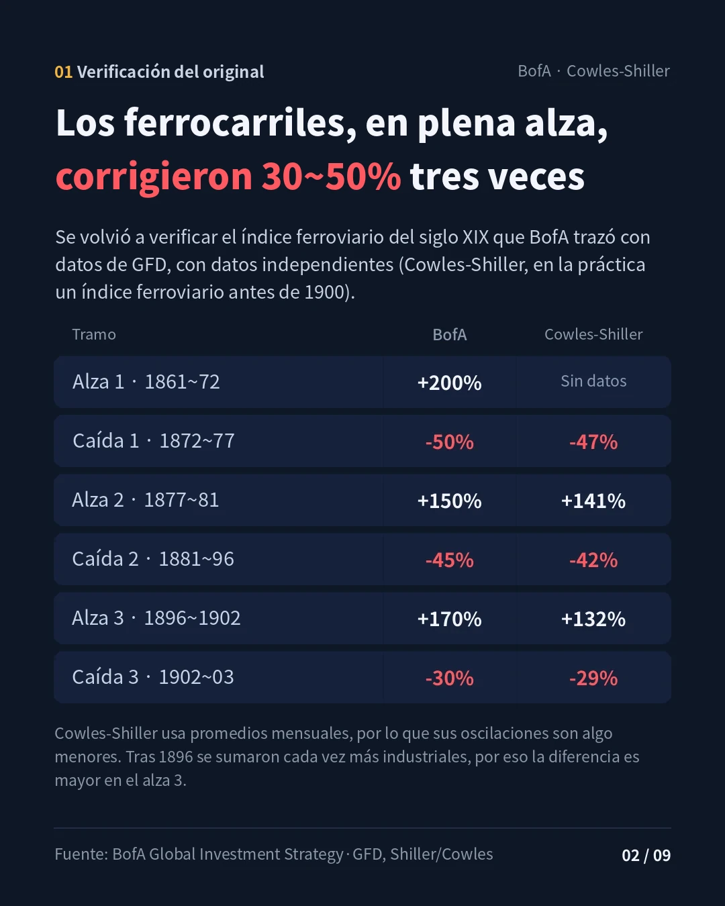
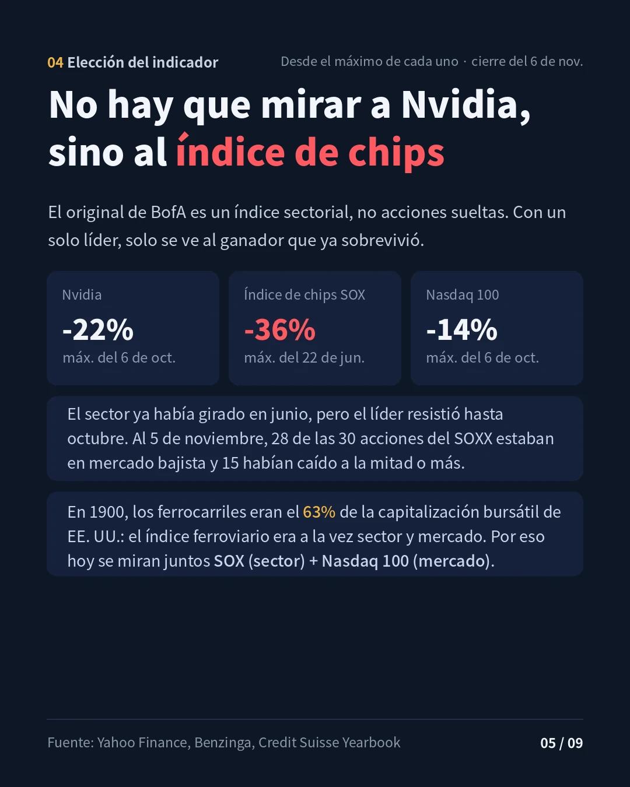
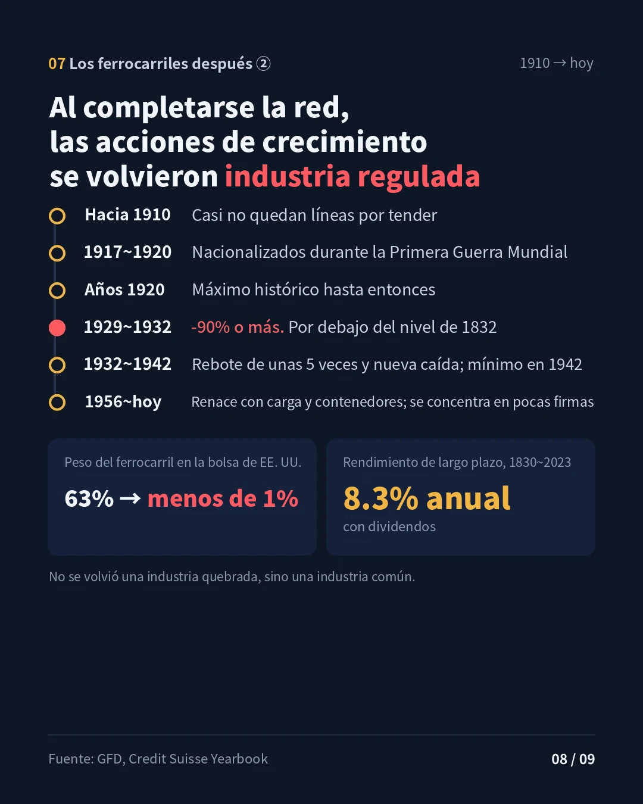

Datos al cierre de la sesión regular de EE. UU. del 6 de noviembre de 2026 · Redactado el 9 de noviembre de 2026 (hora de Corea) · stayhungryasi.com
Convenciones: los precios actuales se calcularon directamente con cierres diarios (índices) y cierres ajustados (acciones individuales) de Yahoo Finance. Para el siglo XIX se presentan juntas las cifras del original de BofA·GFD y los datos mensuales de Shiller (Cowles). "Interpretación" indica juicio del autor. No constituye una recomendación de inversión.
Las acciones ferroviarias de finales del siglo XIX (finales de los años 1800) y los semiconductores de la década de 2020, con 130 años de distancia, se desplomaron tres veces, casi en la misma magnitud, dentro de un mercado alcista. Este informe reconstruye ese ritmo con datos reales y sigue lo que ocurrió después con los ferrocarriles.
Lo esencial, resumido en 9 tarjetas. Al hacer clic en una imagen se amplía.
BofA trazó el índice ferroviario del S&P 500 con datos de GFD y mostró tres grandes correcciones dentro del mercado alcista de finales del siglo XIX. Estas cifras se contrastaron con el índice bursátil de largo plazo de Cowles (iniciado en 1871) que publica el profesor Shiller. Antes de 1900, la mayor parte de la capitalización de la Bolsa de Nueva York correspondía a ferrocarriles, por lo que en ese periodo el índice Cowles es, en la práctica, un índice de un solo sector: el ferroviario (CFA Institute).
| Tramo | BofA (GFD) | Cowles-Shiller (promedio mensual) | Máximo y mínimo según Cowles |
|---|---|---|---|
| Alza 1 | +200% | Sin datos | Inicia en 1871 |
| Caída 1 | -50% | -47% | 1872.4 → 1877.6 |
| Alza 2 | +150% | +141% | 1877.6 → 1881.6 |
| Caída 2 | -45% | -42% | 1881.6 → 1896.8 |
| Alza 3 | +170% | +132% | 1896.8 → 1902.9 |
| Caída 3 | -30% | -29% | 1902.9 → 1903.10 |
Cowles-Shiller usa promedios mensuales, por lo que sus oscilaciones resultan menores que entre máximos y mínimos diarios. Se estima que la diferencia es mayor en el alza 3 por la creciente inclusión de acciones industriales después de 1896.
Para comparar el ritmo a simple vista, el índice Cowles-Shiller se trazó con el mismo formato que el gráfico del índice de semiconductores (SOX) de la sección 2: escala logarítmica, flechas amarillas para las alzas y rojas para las correcciones.
El original de BofA es un índice sectorial. Usar una sola acción líder equivale a elegir a un ganador que ya sobrevivió, lo que embellece el panorama. En esta corrección, Nvidia estaba -24% por debajo de su máximo del 6 de octubre (cierre del 5 de noviembre), mientras que el SOX ya había tocado techo el 22 de junio y había retrocedido hasta -38%. Al 5 de noviembre, 28 de las 30 acciones del SOXX estaban en mercado bajista, con caídas de 20% o más desde sus máximos, y 15 habían bajado más de 50% (Benzinga). Es un mercado en el que el sector se derrumbó primero y el líder resistió hasta el final.
Hay otra pista. A inicios de 1900, los ferrocarriles representaban el 63% de la capitalización bursátil de EE. UU. (Credit Suisse Yearbook). El índice ferroviario de entonces era a la vez índice sectorial e índice de mercado. Por eso, hoy hay que mirar juntos el sector (SOX) y el mercado (Nasdaq 100) para obtener el mismo planteamiento que el original.
| Fase de corrección (cierres diarios, máximo → mínimo) | SOX | Nasdaq 100 | Nvidia |
|---|---|---|---|
| 2020 Covid | -35.0% | -28.0% | -37.5% |
| 2022 choque de tasas | -46.5% | -35.6% | -66.3% |
| 2024–25 desarme del carry trade del yen, DeepSeek, aranceles | -39.7% | -22.9% | -36.9% |
| 2026 actual (hasta el mínimo del 5 de nov.) | -38.4% | -14.7% | -24.1% |
Las fechas de máximo de los tres indicadores son distintas. Para Nvidia se usa el cierre ajustado por divisiones de acciones y dividendos.

Al poner los tres ciclos del SOX junto a los ferrocarriles, el tamaño de las correcciones es sorprendentemente parecido (-50/-45/-30 vs. -46/-40/-38). Sin embargo, hay que señalar dos cosas. Primero, el alza 1 del SOX comenzó en el mínimo de Covid de marzo de 2020, antes del lanzamiento de ChatGPT, por lo que se parece más a un auge digital de la pandemia que a un rally de la IA. Segundo, el alza 3 fue mucho más empinada (+311%) que la de los ferrocarriles (+170%). No es un rally que se debilitó y luego giró, sino una caída brusca tras el sobrecalentamiento (interpretación).
En el siglo XIX se derrumbaron las compañías que tendieron las vías, y sobrevivieron las que suministraban los rieles. En esta corrección, el orden es distinto. Lo que teme el mercado es una reducción de la inversión en capital, y los semiconductores, que reciben ese dinero como ingresos, son los que reciben el golpe de frente. Los hiperescaladores con abundante efectivo (MSFT·AMZN·GOOGL·META·ORCL con igual ponderación, canasta construida por el autor) resistieron con -14.1% desde su máximo del 1 de junio, similar al Nasdaq 100 (-13.6%).
Lo que se parece a la era ferroviaria son las neoclouds, que construyen capacidad con deuda. Al cierre del 6 de noviembre, CoreWeave estaba -74.7% por debajo de su máximo, IREN -71.7% y Nebius -54.8%. Gartner proyectó que más del 80% de las neoclouds no sobrevivirá de forma independiente hacia 2030 (Trending Topics). La escena coincide con el Pánico de 1893, cuando una cuarta parte de la red ferroviaria de EE. UU. quedó bajo administración judicial (Panic of 1893).
El gráfico de BofA termina en 1903, pero el ritmo se repitió una vez más. El índice Cowles subió alrededor de 60% desde su mínimo de octubre de 1903 hasta septiembre de 1906, y con el Pánico de 1907 cayó alrededor de 38% hasta noviembre (promedios mensuales). Justo antes, en 1906, la Ley Hepburn permitió al gobierno fijar topes a las tarifas ferroviarias. El índice recuperó un máximo histórico a finales de 1909. No obstante, después de 1900 el peso de las acciones industriales en el índice Cowles aumentó con rapidez, por lo que es difícil leerlo como un desempeño puramente ferroviario.

El verdadero cambio vino después. Según GFD, hacia 1910 casi no quedaban lugares nuevos a los que extender el ferrocarril, y durante la Primera Guerra Mundial el gobierno nacionalizó los ferrocarriles. Las acciones ferroviarias alcanzaron en la década de 1920 el que era entonces su máximo histórico, pero en 1929–32 se desplomaron más de 90% desde el máximo y cayeron por debajo del nivel de 1832, de 100 años antes (GFD).
| Periodo | Lo que les ocurrió a los ferrocarriles |
|---|---|
| 1903~1907 | Alza 4 de alrededor de +60%, Ley Hepburn de 1906, pánico de 1907 de alrededor de -38% (promedio mensual de Cowles) |
| Hacia 1910 | La expansión de la red prácticamente termina |
| 1917~1920 | Nacionalizados por el gobierno durante la Primera Guerra Mundial |
| Años 1920 | Acciones ferroviarias en máximos históricos para la época |
| 1929~1932 | -90% o más desde el máximo, por debajo del nivel de 1832 |
| 1932~1942 | Rebote de unas 5 veces hasta 1937 y nueva caída; mínimo en 1942 |
| 1956~hoy | Renacen con el transporte de carga y contenedores; la industria se concentra en pocas empresas |
El peso del ferrocarril en la bolsa de EE. UU. bajó de 63% en 1900 a menos de 1% (EconLife). Aun así, el rendimiento de largo plazo del índice ferroviario entre 1830 y 2023 fue de 8.3% anual con dividendos incluidos. El ferrocarril no se volvió una industria quebrada, sino una industria común.
Carlota Perez sostiene que las revoluciones tecnológicas avanzan en este orden: frenesí financiero → colapso → reajuste institucional (punto de inflexión) → despliegue en la economía real. En el punto de inflexión interviene la política. En el caso del ferrocarril, ese papel lo cumplieron las Leyes Granger (década de 1870), la Ley de Comercio Interestatal (1887) y la Ley Hepburn (1906). En la IA de 2026, el estado de Nueva York impuso en julio una moratoria de 1 año a los grandes centros de datos (6sqft), y Texas suspendió en agosto las aprobaciones de conexión a la red eléctrica (Jones Day). Justo después de las elecciones intermedias de noviembre, en medio de la preocupación por la regulación de los centros de datos, el SOX cayó -12.25% en un solo día, la segunda mayor caída de su historia (24/7 Wall St.). Dicho esto, la propia Perez no ve la IA como una nueva revolución, sino como la tecnología que completa la revolución de la información y las telecomunicaciones iniciada en 1971. La analogía anterior es una interpretación que toma prestado su marco.
En el lado del capital también hay señales que recuerdan la etapa final del ferrocarril. Se prevé que la inversión en capital de Amazon, Alphabet, Meta, Microsoft y SpaceX en 2026 sea de 803 mil millones a 828 mil millones de dólares (Hargreaves Lansdown). El flujo de caja libre de Amazon en los últimos 12 meses fue de -42.4 mil millones de dólares, y el de Alphabet en el tercer trimestre, de -9.1 mil millones de dólares (Tech Insider). En cambio, Microsoft redujo su previsión de capex para 2026 por retrasos en la capacidad de centros de datos de terceros, mientras que otras big tech anunciaron que aumentarán aún más su inversión en 2027, de modo que las señales son mixtas.
El ferrocarril dejó cuatro lecciones (interpretación). En un mercado alcista, las correcciones de 30–50% no son la excepción, sino la regla. Aunque el índice se recupere, los que construyeron con deuda caen primero. El verdadero pico del crecimiento es el momento de "la red completa", cuando ya no quedan lugares donde construir. Y los innovadores también terminan cediendo su lugar a la siguiente innovación. El lugar del ferrocarril se lo repartieron el automóvil, el camión y la aviación.
| Tema | Por qué importa |
|---|---|
| Resultados del tercer trimestre de Nvidia (17 de nov.) | Primer dato para ver si la desaceleración del capex se traduce en una caída real de pedidos |
| Guía de capex 2027 de las big tech | Indicador adelantado del momento de "la red completa". Si los recortes de guía se extienden |
| Precio de las acciones y crédito de las neoclouds | Condiciones de financiamiento de los operadores apalancados |
| Legislación sobre centros de datos | Si las moratorias se extienden. Señal de punto de inflexión, como la regulación ferroviaria |
| Cierre del SOX del 5 de nov.: 9,011 | Un cierre por debajo de ese nivel abriría la posibilidad de que la corrección supere la caída 3 de los ferrocarriles (-30%) y se profundice |
Los precios actuales se calcularon con cierres diarios (índices) y cierres ajustados (acciones individuales) de Yahoo Finance hasta el 6 de noviembre de 2026. Los máximos y mínimos se basan en cierres diarios; el gráfico del SOX usa cierres semanales y se le añadieron las fechas de máximo y mínimo. La canasta de hiperescaladores es MSFT·AMZN·GOOGL·META·ORCL con igual ponderación y rebalanceo diario. Para el siglo XIX se presentan juntas las cifras del original de BofA·GFD y los datos mensuales de Shiller/Cowles.
stayhungryasi.com · Investigación con fines exclusivamente informativos; no constituye una recomendación de inversión. Los patrones pasados y las analogías históricas no garantizan rendimientos futuros. Las decisiones de inversión y su responsabilidad corresponden al inversionista.